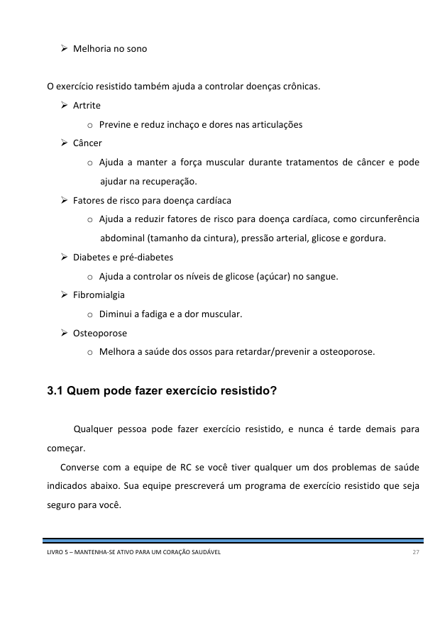

Desafio: Comece um programa de exercício resistido
Exercício de resistência é uma parte importante de um programa de exercícios bem equilibrado.
Aumentar a força e a resistência muscular ajuda a melhorar a sua forma física e diminuir o
risco de doenças cardíacas.
O que você deve saber ao final desta semana:
- O que é treinamento de resistência
- Os benefícios do treinamento de resistência
- Como fazer o treinamento de resistência com segurança
1. Pense e reflita sobre o plano da semana passada, e responda as perguntas abaixo
2. Assista ao vídeo THRiVE:
Clique na imagem abaixo para assistir ao vídeo.
3. Planeje a sua semana e preencha as perguntas abaixo
4. Leia o material abaixo e aprenda um pouco mais sobre exercício resistido
Mantendo-se ativo para um coração saudável

